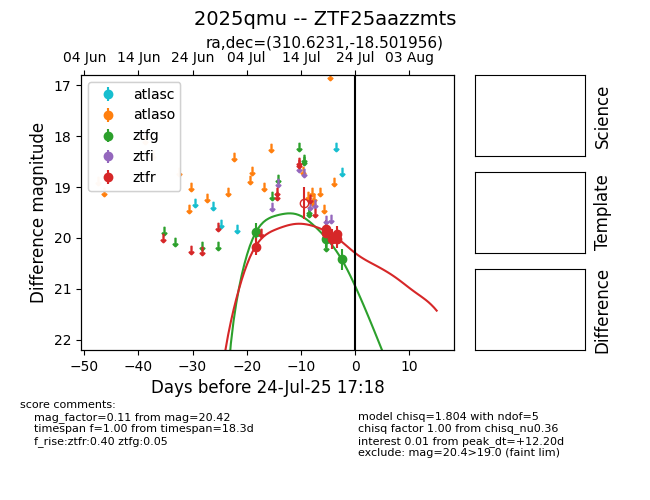

Target 2025qmu at 2025-07-24 17:18, see:
FINK: fink-portal.org/2025qmu
Lasair: lasair-ztf.lsst.ac.uk/objects/2025qmu
ALeRCE: alerce.online/object/2025qmu
TNS: wis-tns.org/object/2025qmu
YSE: ziggy.ucolick.org/yse/transient_detail/2025qmu
alt names
ZTF25aazzmts (ztf,fink)
2025qmu (tns,yse)
coordinates:
equatorial (ra, dec) = (310.6231,-18.50196)
galactic (l, b) = (27.4186,-32.53745)
photometry
last ztfg=20.42, ztfr=19.93
3 ztfg, 6 ztfr detections
